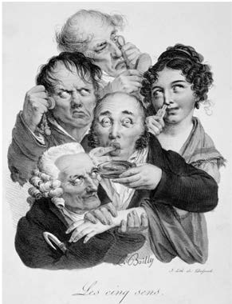
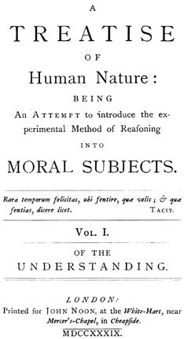

在哲学史上，大卫·休谟往往被视为完成了一场运动，这场运动始于1690年约翰·洛克《人类理解论》的出版，1710年即休谟出生前一年乔治·贝克莱《人类知识原理》的出版则是它的延续。这场运动的主题是，人关于世界的知识只能来源于经验。其发展线索是，如洛克所说，经验由感觉和反思所组成；作为反思对象的心灵操作仅仅指向由感官所提供的材料或心灵操作本身对这些材料的改造；感官所提供的材料包括颜色、触觉感受、身体感觉、声音、气味和味道等原子要素。
洛克试图以此为基础勇敢地描绘一幅与玻意耳和牛顿的科学理论相一致的物理世界图景。它主要依赖于洛克所采用的知觉理论，该理论将感觉材料或洛克所谓的“简单观念”分成两类：第一类是硬度、形状和广延等观念，这些观念不仅是物体作用于我们心灵的结果，在特性上也与这些物体相似；第二类是颜色、味道等观念，它们仅仅是物体作用于我们心灵的结果。这两类观念分别被称为第一性质的观念和第二性质的观念。在这两种情况下，性质都是物体通过“微小部分”（minute parts）的本性和活动而产生的，但实际上第一性质刻画的是物体本身，第二性质则只是意向性的，仅仅是在适当条件下能使物体在我们心灵之中产生观念的能力。
根据上述观点，贝克莱被认为推翻了洛克的知觉理论，从而反驳了洛克。他不但表明洛克做出第一性质与第二性质的重要区分是没有道理的，更具破坏性的是指出，根据洛克的前提，洛克相信有物体存在是没有根据的；也就是说，只要按照牛顿和洛克的方式认为物体独立于我们对它们的知觉而存在，而不是仅仅由观念或“可感性质”所组成，那么洛克就没有理由相信有物体存在。贝克莱有些轻率地声称，认为物体仅仅由观念或“可感性质”所组成，这种观点更符合常识。必须有心灵去感知观念，由于我们只有很少一部分观念是我们自己幻想出来的，所以绝大多数观念需要有某个外因。但这并不需要，也没有根据，而且正如贝克莱所推理的，甚至没有任何融贯的可能性要去求助于物质。上帝不仅足以产生我们的观念，而且足以在人没有知觉到事物时维持事物存在。如果贝克莱像后来约翰·斯图尔特·密尔所研究的那样把物体归结为“感觉的持久可能性”，他也许会给上帝减轻一点负担，其著作中有些段落似乎表明他持这种观点。但贝克莱是圣公会的一位主教，将上帝的作用最大化符合其宗教兴趣。在牛顿物理学中，宇宙被造物主创造出来，然而一旦这个宇宙机器启动，造物主就可以不再管它，它将自行可靠运转。贝克莱认为，这鼓励了自然神论，甚至更糟。因此，他务必使上帝持续不断地关注万物。
休谟所承担的角色基本上是，当初贝克莱怎样批判洛克，他就怎样批判贝克莱。贝克莱取消了物质，至少是取消了物理学家所理解的物质，却保留了心灵。自认为是怀疑论者的休谟表明，贝克莱的这种偏爱是没有根据的。正如我们没有理由相信物质实体的存在，我们也同样没有理由相信那种在时间中保持同一性的心灵的存在。我们也缺少任何合理的理由去相信贝克莱所说的上帝的存在。但休谟把他的怀疑论推得更远。洛克和贝克莱都不加深究地接受了因果性概念，他们的区别仅仅在于，洛克承认物理微粒之间存在着力的关系，而贝克莱则认为因果活动完全由心灵来控制。休谟着手分析原因与结果的关系，他的分析表明，力的观念或者通常所理解的因果活动的观念乃是一种神话，不同的事件之间不可能有必然联系。于是，剩下的只是一系列没有外在对象的短暂“知觉”，它们不属于任何持久的基体，彼此之间甚至没有约束力。

图6 L. 贝利的一幅漫画，表现了视觉、嗅觉、味觉、触觉和听觉五种感官。洛克、贝克莱和休谟所属的传统试图把知识与能够通过感觉观察到的东西结合起来
这是与休谟同时代的最有才干的批评家、继亚当·斯密之后接任格拉斯哥大学道德哲学教授的托马斯·里德牧师归于休谟的结论。里德是苏格兰常识哲学学派的创始人，该哲学传统一直保持到19世纪；他在1764年出版的《根据常识原则对人类心灵的探究》一书率先将《人性论》的第一卷看成休谟哲学观点的首要来源，虽然休谟本人曾打算以《人类理解研究》来取代《人性论》的第一卷。里德认为，从洛克的前提导出其逻辑结论是休谟的贡献。由于结论明显是荒谬的，因此有某种东西从一开始就错了。正如里德所看到的，主要错误在于洛克及其追随者采用了观念理论，他们以为被直接感知的东西（无论是洛克所谓的“观念”，还是“可感性质”，抑或是休谟所谓的“印象”）离开了它出现于其中的知觉状况就没有存在性。如果我们像今天大多数哲学家那样拒绝接受这种看法，而是追随常识，把能进行知觉活动的人的存在视为理所当然，并认为这些人通过其感官直接认识了由独立于人的知觉而存在的物体所组成的同一个世界，那么休谟的怀疑论即使不能在每一个细节上都能令人满意，至少其最不寻常的特征将被消除。
作为怀疑论者的休谟使洛克和贝克莱的经验论遭到挫败，一个多世纪后，与休谟相同的观点出现在牛津哲学家格林的著作中。格林编辑出版了休谟的《人性论》，并为其撰写了一篇很长的导言，其主要目的就是推翻他编的这本书的观点。然而，他的攻击思路几乎与里德的毫无共同之处。到了这个时候，虽然密尔发动了一场后卫战斗，但康德和黑格尔的影响还是蔓延至英国哲学，越来越有损于常识。格林正是这一潮流的领导者之一。他对休谟的主要反驳是，休谟认为给世界带来最高秩序的仅仅是观念的联想。根据他从洛克和贝克莱那里继承的原理，休谟再次被认为是合理的；从中得出的教益是，需要有一种新的研究进路。这一点得到了康德的赞赏，康德在《未来形而上学导论》中说是休谟使他从“独断论的迷梦”中醒来，并且给他“在思辨哲学领域的研究以全新的方向”。在1930年代的牛津，也许直到今天在某些地方，对休谟的正统看法是：虽然休谟有格林无情指出的各种错误和不一致，但他仍然为哲学做出了重大贡献，比如贝利奥尔学院前任院长林赛在为袖珍人人哲学读本所作的导言中就提出了这种看法。休谟一方面表明，不加批判地信任理性会以独断论而告终，另一方面又表明，纯粹的经验论是荒谬的，从而为康德铺平了道路。
据我所知，是诺曼·肯普·史密斯教授作为评论者第一次既不把休谟看成洛克和贝克莱的附庸，也不把他看成康德的先驱者，而是把他视为一个原创性的哲学家，至少应予认真考察。1941年，肯普·史密斯教授出版了《大卫·休谟的哲学：对其源头和核心学说的批判性研究》。这本书篇幅很长，也并不总是明白易懂，但它写作认真，学问深厚，特别注重休谟实际所说的话。例如他指出，如果休谟的主要意图是清理洛克和贝克莱的遗产，那么他将不大可能在《人性论》的导言中宣称：“在自称……解释人性的原理时，我们实际上是在提出一个完整的科学体系，它建立在几乎全新的基础上，这个基础乃是唯一稳固的科学基础。”（T, p. xvi）肯普·史密斯还指出，虽然这篇导言的确把洛克列入了“那些开始为人的科学奠定新基础的一些晚近的英国哲学家”，但休谟提到的其他一些人，如“沙夫茨伯里伯爵、曼德维尔博士、哈奇森先生、巴特勒博士”（T, p. xvii）等等，都是道德哲学家。这正应验了肯普·史密斯的观点，即休谟的主要关切是把自然哲学吸收到道德哲学之中。在道德哲学中，休谟同意弗朗西斯·哈奇森的看法，认为我们的道德判断建立在一种至高无上的“道德感”的运作的基础上。而在包括对物理世界的研究的自然哲学中，这种统治权则是肯普·史密斯所谓的“自然信念”。这些都是对“感受”的表达，主要由习性或习惯所控制，而不受制于任何严格意义上的理性。只有在我们现在所谓的纯形式问题这一有限领域内，理性才有支配权。总之，根据这种观点，休谟的名言“理性是而且也只能是激情的奴隶，除了服务和服从激情，再不能有任何其他职务”（T 415）不仅像通常认为的那样适用于价值判断，而且也适用于除我们理解力的纯形式训练之外的全部范围。后面我们将会考察肯普·史密斯对休谟哲学的这种总体观点在多大程度上是合理的。
如果认真研究休谟的著作，我们就会发现他与贝克莱的分歧。诚然，休谟在《人性论》中把贝克莱称为“一位伟大的哲学家”（T 17），但这主要是因为贝克莱的抽象观念理论，根据这一理论，“所有一般观念都只是附属于某个词项的特殊观念，该词项赋予那些特殊观念一种较为广泛的意义，使它们有时唤起与之相似的其他个体”（T 17）。休谟称这一理论是“近年来学术界最伟大、最有价值的发现之一”。至于该理论是否配得上休谟的这种评价，则是我们必须讨论的另一个问题。休谟和贝克莱都拒绝接受洛克关于第一性质和第二性质的观念的区分，在《人类理解研究》中，休谟认为“那些第一性质的观念是通过抽象而获得的”这样一种观点，“如果我们加以认真考察，就会发现是无法理解的甚至是荒谬的”（T 154）。他承认自己的这种怀疑论观点得益于贝克莱。他接着说：“这位聪明作者的大多数作品已经成为古今哲学家（培尔也不例外）怀疑论的最佳课程。”（E 155）这是对贝克莱的非凡评价，更不寻常的是，正如肯普·史密斯用大量文献所表明的，皮埃尔·培尔在1697年出版的怀疑论的《历史与批判辞典》乃是休谟本人怀疑论的主要资料来源。休谟很清楚，贝克莱不会承认自己是一个怀疑论者。恰恰相反，贝克莱把怀疑论者、无神论者和自由思想家都归于他的哲学体系旨在挫败的敌手。但休谟仍然认为，贝克莱的所有论证都是“纯粹怀疑论的”，其理由是，“它们不容许任何回应，也不产生任何可信性。它们的唯一作用就是造成那种暂时的惊异和犹豫不决，这正是怀疑论的结果”（E 155）。

图7 《 人性论》扉页的复制本。引文意为“人们很少有机会思其所爱，说其所想”
休谟也这样看待自己的论证吗？我们将会看到，有关证据是相互冲突的，甚至在《人性论》第一卷著名的最后一章中，休谟声称已经表明，“理解力在依照它最一般的原则单独起作用时就完全推翻了它自己，不论在哲学中还是在日常生活中，在任何命题中都没有留下最低程度的证据”（T 267—268）。我将会指出，这里休谟过分夸大了其推理的怀疑论意义，但我现在要指出的是，休谟从“任何优雅或细致的推理都不应当接受”（T 268）的结论中退缩了。事实上，他的确说过：“自然本身足以”治愈他的“哲学忧郁症”，他认为自己“绝对而必然地决心像其他人一样在日常事务中生活、谈话和行动”（T 269）。即便如此，这也并不意味着对哲学的拒斥。在这一章结尾，休谟仍然“希望建立一个体系或一套观点，即使不是真的（因为这也许超出了我们的希望），至少也会使人的心灵感到满意，经得起最严格的考察检验”（T 272）。在《人类理解研究》中（别忘了此书是用来取代《人性论》的），我们也几乎听不到怀疑论的论调。而当这种论调的确出现时，其用处也是正面的，它是一种对抗迷信的武器。
休谟也并非认为贝克莱的所有论证都无法回应。他也许认为贝克莱对物质存在的否证没有什么明显缺陷，尽管这一点很可疑，但他确信自己可以回应贝克莱关于上帝存在的证明。该回应出现在《人类理解研究》所载休谟对马勒伯朗士的答复中。马勒伯朗士曾以偶因论者的身份回答过笛卡尔的问题，偶因论者“声称通常被称为原因的那些对象其实只是偶因；每一个结果真正而直接的本原并非自然之中的任何能力或力量，而是至高存在的一种意志，这个至高存在想让这些特殊物体永远彼此连接在一起”（E 70）。休谟对这种仙境漫游所作的评论也适用于贝克莱，他说如果我们无法参透物理力的秘密，我们将“同样对心灵哪怕是至高的心灵作用于自己或物体所凭借的方式或力一无所知”（E 72）。如果我们意识不到自身之中的这种能力，那么我们把它归于一个至高存在什么也解释不了，关于这个至高存在，除了“我们通过反思自己的官能所了解到的东西”（E 72）以外，我们一无所知。休谟还嘲笑贝克莱说：“神若把一些权力授予低等的受造物，肯定要比凭借他自己的直接意志产生万物更能证明他有较大的能力。”（E 71）
休谟在嘲讽方面的才能堪比他的历史学家同仁爱德华·吉本。和吉本一样，论及宗教时，休谟的这种才华最能显示出来。比如在他生前未曾发表的那篇《论灵魂不朽》中，他说“任何东西都无法更完整地呈现人对神的启示所负有的无穷义务，因为我们发现，没有任何媒介能够确定这个伟大而重要的真理”（G 406）。在《人类理解研究》中，他在论神迹一章的最后更加直接地写道，不可能有任何理由让人相信神迹，“基督教不仅从一开始就伴随着神迹，即使在今天，任何讲理的人离开了神迹也不可能相信它。单凭理性不足以使我们相信基督教的真理性；如果有人受信仰的感动而赞成基督教，那他一定亲身体验到了持续的神迹，此神迹推翻了其理解力的一切原则，使他决意相信与经验习惯非常抵触的东西”（E 131）。
休谟一贯反对基督教，这既有理智根据又有道德根据。比如在《宗教的自然史》一文中，他先是承认“罗马天主教徒是一个非常有学识的教派”，然后又赞许地引用“那个著名的阿拉伯人阿威罗伊斯”的话说，“在所有宗教中，最为荒谬和无意义的是这样一种宗教，其信徒在创造了他们的神之后又吃了祂”（G 343）；他又补充说：“在所有异教信条中，最荒谬无稽的莫过于实际在场的信条：因为它是如此荒谬，以致避开了所有论证的打击。”（G 343）加尔文宗的日子也不好过。对于他们，休谟赞同他的朋友谢瓦利埃·拉姆齐的看法，认为犹太人的神“是一个极为残忍、不公正、偏心和荒诞的存在”（G 355）。他较为详细地证明了这一命题，以表明加尔文宗的信徒们在亵渎神明方面胜于异教徒。“更为粗俗的异教徒只满足于将色欲、乱伦和通奸神圣化，而命定论的博学之士却将残忍、愤怒、狂暴、报复以及一切最黑暗的罪恶神圣化。”（G 356）这句话也许会被认为仅仅是在谴责命定论的博学之士，但休谟在《人类理解研究》中已经指出，既然人的一切行动都像物理事件一样是决定的，那么如果把这些行为追溯到一个神，则除了是其他一切事物的创造者之外，祂必定也是“罪与道德堕落的创造者”。莱布尼茨认为，现实世界是一切可能世界中最好的，因此它所表现的所有罪恶其实证明了上帝的善——这种想法对于休谟和伏尔泰来说都是荒谬可笑的，尽管休谟缺乏合适的性情写出一部像伏尔泰的《老实人》那样带有强烈嘲讽意味的作品。
一般来说，休谟倾向于认为，相信神的单一性的人，无论接受的是基督教版本还是其他什么版本的一神教，在理智上都比多神论者更超前，因为在休谟看来，多神论者所信奉的宗教是非常原始的。另一方面，一神论者因不宽容而主动迫害那些不同意其宗教观点的人，这使一神论者“对社会更具破坏性”（G 338）。休谟将宗教信仰的起源归因于人们对自然原因的无知，以及“驱策人心的持续不断的希望和恐惧”（G 351）。为使希望得到满足，恐惧得以减轻，人们求助于与自己特性相似但能力远为强大的存在者。之所以发明这些存在者，据说是因为“人类普遍倾向于设想一切存在者都像自己，并把他们熟悉和明显察觉到的性质转移到每一个对象上去”（G 317）。即使存在者很少甚至从来没有具体形象，其数目减少到一，这种倾向也将持续存在。
休谟从未宣称自己是无神论者。恰恰相反，在《宗教的自然史》等作品中，他公然宣称接受设计论证。他写道：“整个自然结构表明有一个理智的创造者；任何理性的探究者经过认真反思，都不会对真正有神论和宗教的基本原则感到片刻怀疑。”（G 309）这段话并非明显地不诚恳，我不得不按照我个人的偏见将其视为一种讽刺。然而事实上，在《自然宗教对话录》这部杰作中（该书是休谟在生命的最后25年中断断续续写成的），我们将会看到，最强有力的论证借斐洛之口说出，他在对话中扮演的角色正是要驳斥那种设计论证，我也同意肯普·史密斯（他编了一个出色的《自然宗教对话录》版本）的看法，即休谟从未公开表明自己的观点，是想让敏锐的读者得出结论说，他持斐洛的立场。在我看来，不仅要使各种更为迷信的有神论名誉扫地，而且要使任何形式的宗教信仰都名誉扫地，这的确是休谟哲学的一个主要目标。
在考察17世纪或18世纪初任何一位著名哲学家的著作时，必须时刻牢记，他们并没有把哲学与自然科学或社会科学区分开来，这种区分只是最近才兴起的。这并不是说他们把哲学本身看成一门特殊的科学，而是说，他们把每一种形式的科学研究都视为哲学的。对他们而言，主要划分是集中于物理世界的自然哲学和被休谟称为“人性科学”的道德哲学。必须承认，在这两者当中，自然哲学要发达得多。我们对自然界物理运作的认识的进步始于哥白尼、开普勒和伽利略的工作，在玻意耳和牛顿的工作中达到顶峰，而道德哲学家则没有在重要性上可与之相比的工作。然而在某种意义上，洛克和休谟都认为道德哲学最重要。正如休谟在《人性论》导言中所说，其理由在于，“一切科学都与人性有或多或少的联系，不论看上去与人性离得有多么远，它们总会以这样那样的途径回到人性”（T, p. xv）。逻辑学、道德学、评论学和政治学等科学要比其他科学与人性有更紧密的联系，但即使是数学和物理科学也要依赖于人的认知能力。休谟说：“如果我们彻底了解了人类理解力的范围和能力，能够解释我们所运用的观念以及推理操作的性质，那么我们在这些科学中所能做出的变化和改进简直无法言表。”（T, p. xv）
和之前的洛克一样，休谟决定满足这些需求。他对洛克的尊敬是有限度的，他正确地责备洛克过分散漫地使用“观念”一词，又有失公正地责备洛克受到经院哲学家的诱惑而错误地处理了天赋观念问题，并且让“模棱两可和累赘繁冗”贯穿于“在许多其他问题上的……推理”（E 22）。但他同意洛克的这样一种看法，即推理中的实验方法适用于道德科学，他们二人都把牛顿及其先驱者的成就归功于此方法。然而，洛克对牛顿理论有更深的理解。虽然他们都认为牛顿理论依赖于“经验和观察”（T, p. xvi），但洛克注意到，在牛顿那里这种依赖是间接的，而休谟似乎没有注意到这一点。洛克知道，牛顿是通过物体的本身观察不到的“微小部分”的活动来解释物体行为的；他试图将这个事实与他给我们的观念以及随之产生的认识能力所强加的限制调和起来，正是这一努力导致了休谟指责他的“模棱两可和累赘繁冗”。而在休谟口中，牛顿就好像只是在运用直接归纳而已。牛顿在《自然哲学的数学原理》开头所说的那句摒弃假设的名言——“我不杜撰假说”——可能是说他不提出那些缺乏实验证据的命题。而休谟却似乎认为牛顿的意思是，他不作任何不基于观察实例的概括。这一历史错误在一定程度上影响了休谟对因果关系的处理。对因果关系的处理是休谟体系的一个特点，休谟本人也正确地认为它最重要，但我将试图表明，这一历史错误并未严重削弱其论证的力量。它并没有影响休谟发展一种心灵科学的尝试，因为这里的全部关键在于，他能对意识的不同状态做出准确描述，并能基于日常观察做出被认为令人满意的概括。
至少从表面上看，洛克和休谟所遵循的方法非常简单。他们提出了两个问题：提供给心灵的材料是什么？心灵又如何利用它们？休谟对第一个问题的回答是，材料由知觉构成，他将知觉分成印象和观念两类。在赞扬《人性论》优点的不具名的《〈人性论〉摘要》中，休谟说该书作者称“知觉是呈现于我们心灵的不论什么东西，无论我们在运用自己的感官，还是受情感驱使，抑或是运用我们的思想和反思”（T 647）。他又说，“当我们感受到任何类型的情感，或者我们的感官带来外物的意象时”（T 647），知觉被称为印象。他补充说：“印象是生动而强烈的知觉。”这意味着观念之所以较为模糊和微弱，是因为观念是在“我们反思不在场的情感或对象时”所产生的（T 647）。
除了对外在对象的指涉（我们将会看到，这对于休谟来说构成了一个严重的问题），这种对印象的论述非常类似于《人性论》中对它的论述。在《人性论》中，休谟把印象解释为“最有力、最强烈地”进入心灵的那些知觉，并把“印象”理解为“初次出现于灵魂中的我们的一切感觉、激情和情感”（T 1）。在《人类理解研究》中，他又满足于把“印象”解释为“我们在倾听、观看、感受、爱恨、欲求或决意时我们较为生动的一切知觉”（E 18），但这个定义过于简洁，以致容易让人误解。印象的显著特征并不是其力量或生动性，而是其直接性；一般说来，这也许会使印象比记忆的形象或幻想的产物（休谟将这些东西归入与印象相对的观念）更为生动，但经验证据表明，情况并非总是如此。
与洛克不同，休谟并不反对说印象是天赋的。他指出，“如果所谓天赋的是指与生俱来的，这一争论似乎就是肤浅而无聊的；我们也不值得讨论思想是在什么时候开始的”（E 22）。在《人类理解研究》的这段话中，休谟所谓的“天赋”是指“原初的或不由先前知觉复制而来的”，而在《〈人性论〉摘要》中则是指“直接从本性中”产生的知觉。在这两个地方，他都断言所有印象都是天赋的。根据第一个定义，很难说我们的感觉印象是这样的，除非对“复制”的理解很狭窄。如果把第二个定义应用于它们，我们似乎只是用了一种不同方式来说明，印象是感知觉（senseperception）的直接内容。然而，休谟的例子清楚地表明，他这里主要关注的是激情。他的论点是，像“自爱、对侮辱的愤恨或两性的激情”（E 22）这样的东西都是人性所固有的。
在一些段落中，休谟似乎在暗示他对印象与观念的区分可以等同于感受与思想的区分，但这并不意味着他正在预示康德对直观与概念的区分。休谟所说的印象不仅在概念之下进入心灵，而且这些概念一定可以应用于印象。他的论证是：“既然心灵的一切活动和感觉都经由意识而为我们所知，这些活动和感觉必定在每一个特殊情况下都显示为它们之所是，是其显示的样子。进入心灵的每一个事物都实际上是一种知觉，不可能任何东西对感受来说都显得不同。那就等于假设，即使我们有最亲切的意识，我们仍然会犯错。”（T 190）虽然休谟是在否认印象可以伪装成外在对象时讲这段话的，但我认为休谟的意图显然是想让他所主张的“一切感觉都被心灵如实地感受到”应用于我们对其性质的认识。在这一点上他是否正确，是一个悬而未决的问题。我们无疑可以诚实地错误描述我们的感受以及事物向我们呈现的方式，但可以说此时我们的错误是纯粹语词上的，正如罗素所说：“我所相信的是真的，但我选错了语词。”困难在于，在有些情况下，事实错误与语词错误之间的界限不容易划清。幸运的是，就休谟的情形来说，他可以把这个问题搁置起来。他不得不说，我们对印象性质的估计不大可能犯错误，但并非绝对不会错。事实上，在估计于空间中延展的复杂印象的相对比例时，他承认有可能产生怀疑和出错。关于它们是“大于、小于还是等于”，我们的判断“有时是不会出错的，但并非总是如此”（T 47）。
在休谟对印象的论述中，一个更加关键的要素是，他认为所有印象都是“内在的、易逝的存在”（T 194）。正如休谟通常所做的那样，他支持这种观点的论证是逻辑与实验的混合。那些据称“使我们确信我们的知觉没有任何独立存在性”的实验在哲学文献中通常有一个不太恰当的名称，即“出于幻觉的论证”。“我们的所有知觉都依赖于我们的器官，依赖于我们的神经和灵魂精气”，对这一有事实证据的看法的确证是，“物体看起来近大远小，物体的形状看起来在改变，我们在疾病和发热时物体的颜色和其他性质都在变化；此外还有无数其他同样类型的实验”（T 211）。
除了休谟是否有权根据他的前提以这种方式利用物理学和生理学，这个论证显然不能令人信服地反驳像里德那样的反对者，他们采取一种常识看法，认为在感知觉的正常运作中，物体是直接呈现给我们的。该论证之所以不能令人信服，是因为他们的立场并不必然使他们否认我们的知觉因果地依赖于除所感知对象的存在性之外的其他一些因素，也并不必然使他们坚称我们总是按照事物的实际状况去感知事物。因此我认为，休谟如果依赖于他的纯逻辑论证也许会更好，即假定一个被定义为特殊知觉内容的东西可以独立自存，这是自相矛盾的。简而言之，印象被命令为“内在的、易逝的”。稍后我将无视目前流行的观点，论证这一点（或至少是某种与之非常相似的看法）是一个合法的程序，它可以成为一个站得住脚的知觉理论的基础。
出于一些很快会看得很明显的理由，休谟主要关心的是观念，但对于自己如何使用“观念”一词，他的说明却是草率的和不当的。他在《人性论》中说，他所谓的观念是指印象“在思维和推理中”的“模糊意象”（T 1）；在《〈人性论〉摘要》中说：“当我们反思一种不在场的激情或对象时，这种知觉就是一个观念。因此，印象是我们生动而强烈的知觉，观念则是更为模糊和微弱的知觉。”（T 647）《人类理解研究》给出的解释非常相似，只是解释顺序倒了过来。该主题是这样引入的：“我们可以将心灵中的一切知觉分成两类，它们是由力量和生动性的不同程度来区分的。”（E 18）
之所以说休谟的这些解释是不恰当的，并不只是因为它们错误地假定，概念的运作（对休谟来说，这是观念的表现）总是由意象实现的。毋宁说，休谟侧重于一个错误的因素。为了论证，让我们考虑这样一种情况，即某种激情或感觉的确以意象的形式表现出来。该意象与原先的激情或感觉出现时相比也许更不生动，也许相反。关键在于，不论意象有多么生动或模糊，它都不能使自己超出自身。激情或感觉的意象只能被解释为一种象征；它必定会使人相信它所代表的东西的存在，而不是它自己的存在；于是它自身相对强度的问题就变得不相干了。
这些观点可以用记忆的例子加以清楚说明。休谟对记忆所言甚少。他把记忆称为我们重复自己印象所凭借的一种官能，虽然在他看来，任何印象当然都不可能原样重复；他还说，在记忆中复制的东西就其生动性而言“介于印象和观念之间”（T 8）。一般来说，休谟似乎理所当然地认为记忆是可靠的，至少是就最近发生的事件而言。他在很大程度上把记忆的材料置于与感知觉的直接材料相同的层次上，并把它们当成知识的来源，充当着更大胆的推论的基础。我们将会看到，我们有权做出他主要关心的这些更大胆的推论。这里有意思的是休谟对记忆的观念与想象的观念之间的区分。根据我们现在将要考察的休谟哲学的一条基本原则，这两种观念必须都来源于以前的印象，但记忆（只要它正常起作用）“保存了呈现其对象的原有形式”以及对象最初出现时的顺序，而想象，只要处于过去的印象的范围之内，却可以按照任何顺序自由地安排其对应物的顺序，并且随心所欲地对其进行组合，不管这些组合是否实际出现过。但这里有一个困难是休谟基本上忽视的，他只顺便提到过一次，即我们无法回到我们过去的印象去发现这种差异是在哪里获得的。因此，我们实际上只有通过“记忆较大的力量和生动性”（T 85）才能区分记忆和想象。《人类理解研究》也用同样的说法来区分印象与观念。较之“生动而强烈的”记忆观念，想象的观念是“模糊和无力的”（T 9）。
这显然是不可接受的。首先，我们完全有可能记起过去的经验，比如我们参与过的一次交谈，或者当事情出差错时的失望感，这根本不需要借助任何意象。我们甚至可以不借助任何实际意象来想象某种东西是事实。不过，我们还是只考虑意象的确发挥作用的情况。认为服务于想象的意象总是比进入记忆的意象更加模糊无力，这完全是错误的。事实上，休谟本人在《人性论》附录中的一节中承认了这一点，并且搪塞说，即使诗意的虚构描绘出更为生动的画面，它所呈现的观念仍然“不同于从记忆和判断中产生的感觉”（T 631）。但这其实等于承认，关于相对生动性的整个问题是不相关的。无论是否借助于意象，记忆的独特特征是它展示了一个人对他所了解的事物的信念：在休谟所关注的意义上，这种信念是对过去某种经验出现的信念。而想象的独特特征（除了在说某物是想象的意味着它并不存在这种意义上）则是，就它所表现的事态的存在而言，它是中立的。休谟正确地认为，一个人对于过去经验的记忆与他在想象中对他相信的确出现过的经验的重构之间只有“语气上的”不同，但如果他把这看成唯一的或主要的争论所在，那他就错了。
这里我用了“如果”一词，是因为我们并不清楚休谟是否总是这样认为。休谟不是一个一致的作者，他在《人性论》附录的题为“论观念或信念的本性”一节的一个注释中说，在对信念做出哲学解释时，“我们只能断言它是被心灵感受到的某种东西，它将判断的观念与想象的虚构区分开来”（T 629）。虽然休谟并没有把记忆明确包括在判断的观念之中，但从前后文可以看出这一点；同样，虽然休谟进而把我们所认同的观念说成比我们的幻想“更加强烈、牢固和生动”，但现在看起来，他似乎是在一种技术意义上来使用像“生动”这样的词的，暗示着这些词所限定的观念值得赞同。
问题在于，休谟缺乏一个关于意义和指称的恰当理论。在《人性论》附录的结尾，他承认并不满意自己对信念的讨论。由于他把信念首先与推理联系在一起，并假定一切推理最终必须建立在某种印象的基础上，所以他最初把信念定义为“与当前印象相关或相联系的生动观念”（T 96），但在这里，“生动”一词是不适当的，除非用它来代替像“被同意的”这样的表述。休谟的确提出了一个有效的论点，即信念不能是附加于为信念提供内容的观念的更进一步的观念，因为正如我们现在要指出的，用一个句子来陈述的东西，无论它是否被相信，都是相同的。休谟指出，信念也不能是一种印象，因为它依附于仅由观念所组成的结论上。他有时把信念称为一种情感，却没有澄清在既非印象亦非观念的情况下情感究竟是什么。最后，他不得不在《人类理解研究》中说：“信念不在于各个观念的特殊本性或秩序，而在于对它们的构想方式，在于心灵对它们的感受。”（E 49）这样说几乎没有什么启发性，但为公平对待休谟起见，可以说关于给信念做出一种既非平凡亦非循环的分析的问题仍然有待解决。我认为，最近通过行动倾向来分析信念的尝试并不成功。
我们也许会认为，休谟对抽象观念的论述中包含着一个指称理论，但在这里，他比其他任何地方更受到其错误假设的妨碍，即对概念的运用在于构造一个意象。这导致他无谓地致力于证明意象有确定的性质，他并没有把这一命题与他同样论证的另一个命题明确区别开来，即意象代表着那些本身有确定性质的特殊个体。我不确定这些命题中第一个是否为真，但即使两者都为真，它们也是不相干的，因为使用一个一般词项并不需要伴随着一个意象或对任何特殊个体的思想。贝克莱“发现”，词项之所以成为一般的，并非因为它们代表着一个抽象的东西，而是凭借它们的使用。休谟对这一“发现”明智地表示欢迎，但对于它们的使用，他只是说：“个体被集合起来置于一个一般词项之下，以使它们互相类似。”（T 23）
此前我曾提到休谟关于观念起源的一条基本原理，它最初见于休谟的《人性论》：“我们的全部简单观念在最初出现时都来源于简单印象，这些简单印象对应于简单观念，并为简单观念精确描述。”（T 4）对休谟而言，该原理的最重要之处在于，它为观念或概念的正当性提供了标准。正如他在《人类理解研究》中所说：“当我们怀疑对一个哲学词项的使用没有任何意义或观念时（这是很常见的），我们只须考察这个词项据称源于什么印象。”（E 22）
休谟把这当成一种经验概括，但奇怪的是，他立即给出了一个反例。他设想了这样一种情形：一个人熟悉各种不同的色度，却漏掉了其中一个色度。休谟非常正确地指出，此人可以就这个漏掉的色度形成一种观念，认为它在色度上介于其他两个色度之间。在设计出这个反例之后，休谟又轻率地不再考虑它，说它过于“特殊和异常”，不足以使他放弃其一般准则；事实上，他继续认为他的准则是普遍成立的。倘若休谟能够修改他的原理，使之适用于观念的实现而非观念的来源，他本可以避免这种对逻辑的有意冒犯。那样一来，它会要求一个观念能被某种印象所满足。我认为，如果能够无偏见地理解“满足”一词，以便让观念在进入一个至少能被感觉经验间接确证的理论时得到满足，那么这条原理是能够得到辩护的。但这会使我们远离休谟。他可能接受的修改是，观念必须能被印象所例示，但这种修改虽然可以适应休谟所举的反例，约束性仍然太强。在实践中，休谟接受那些能被物体所例示的观念，这些物体本身是通过想象力的某些活动从印象中建立起来的。我们将会讨论这种实践与他的正式理论是多么相左。
在集中讨论了观念之后，休谟又考察了观念连接的方式。在《人性论》中，他区分了七种不同的哲学关系，并按照能否是“知识和确定性的对象”而把它们分成两组。其中有四种关系能够达到这个目标，因为它们只依赖于观念的内在性质，这四种关系是：相似关系、相反关系、性质程度关系和数量比例关系。其余三种关系是：同一性、时空关系和因果关系。休谟把同一性放在第二组的理由是，完全相似的对象如果不在时间和空间上重合，仍然可能在数量上不同。这证明了一个已经明了的事实，即休谟所谓的观念之间的关系并不仅仅是观念之间的，而且也扩展到了落在观念之下的对象之间的关系。事实上，在休谟列出的所有关系中，也许只有相反是纯粹概念的。
这种对关系的划分预示着休谟的第二条基本原理，即“人类理性研究的一切对象都可以自然地分为两种，即观念的关系和事实”（E 25）。在这句出自《人类理解研究》的话中，关于观念关系的断言被当作纯概念的，因而被当成“在直观上或证明上确定的”。它们包括几何、代数和算术等科学。对此休谟谈及甚少，他自己的兴趣在于我们对事实的信念。因此他在《人类理解研究》中将所列的关系减为三种，“即相似关系、时空中的邻近关系和因果关系”（E 24）。前两种关系只不过是联想的原理，重要的关系是因果关系。根据休谟的说法，一切涉及事实的推理似乎都依赖于因果关系。
接下来，休谟着手探究的正是这种关系。但必须指出，当他在自然哲学领域中探究这一关系时，他认为因果关系不适用于转瞬即逝的印象之间，而是适用于持久的对象之间。他举的例子表明了这一点。事实上，只有以这种方式来看，他对因果性的分析才显得可信。同样，在讨论道德哲学时，他也依赖于持久自我的存在。因此，我们必须先来说明休谟如何在没有显示出明显不一致的情况下得出了这些构想。